Image credits
Every photograph, credited.
The images on this site are real photographs published under free licences on Wikimedia Commons. Each is self-hosted, resized, and credited below with its author, licence, and source.
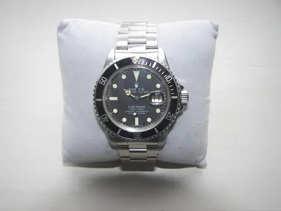
Rolex Submariner Professional.JPG
Dr.K.. CC BY-SA 3.0. Source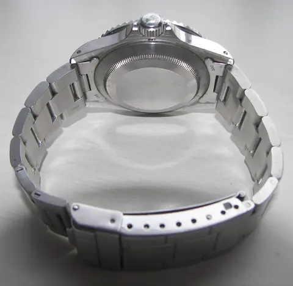
Back of Rolex Submariner Professional.JPG
Dr.K.. CC BY-SA 3.0. Source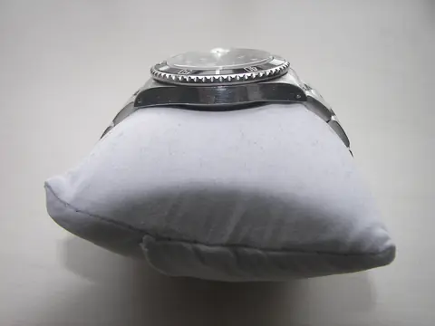
Edge view of Rolex Submariner Professional.JPG
No machine-readable author provided. Tasoskessaris assumed (based on copyright claims).. CC BY-SA 3.0. Source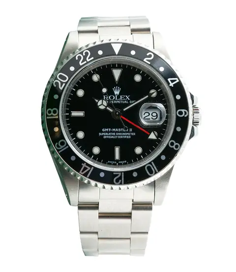
Rolex GMT Master II - 16710 (without background).jpg
File:Rolex GMT Master II - 16710 in it sitting on top of the box.jpg: Peter WILSON. CC BY-SA 4.0. Source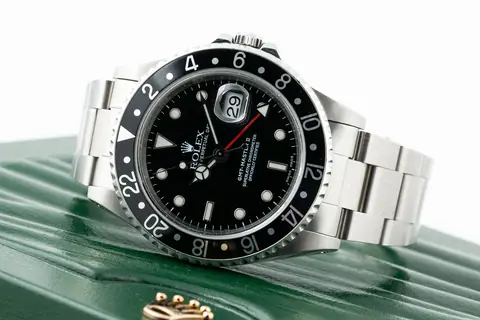
Rolex GMT Master II - 16710 in it sitting on top of the box.jpg
Peter WILSON. CC BY-SA 4.0. Source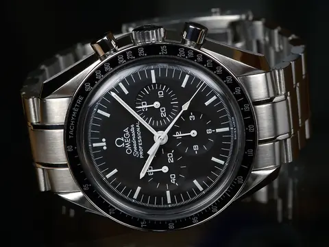
OMEGA-Speedmaster-Professional-Front.jpg
Torsten Bolten. Public domain. Source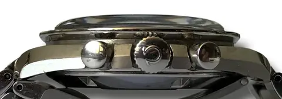
Side view on Omega Speedmaster Professional (cropped twice).jpg
Auge=mit. CC BY-SA 4.0. Source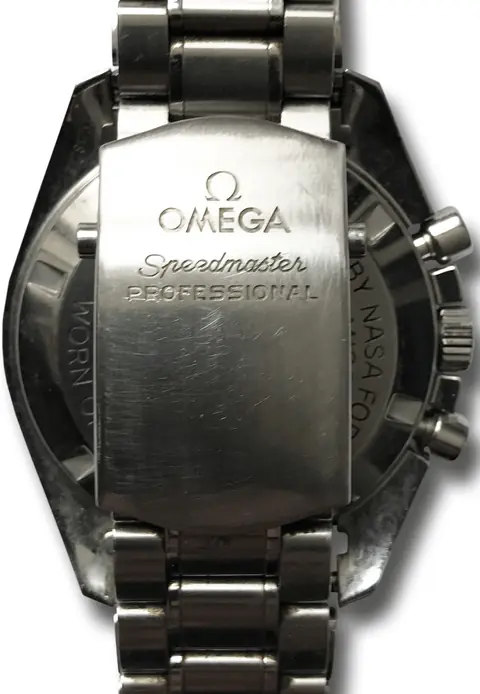
Folding clasp of an Omega Speedmaster Professional wristwatch.jpg
Auge=mit. CC BY-SA 4.0. Source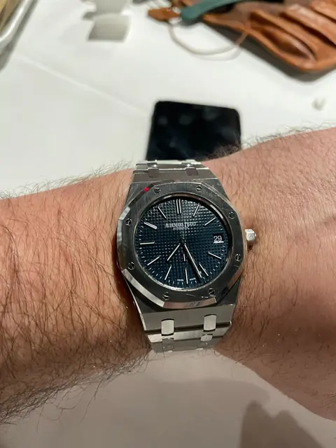
Audemars Piguet Royal Oak ref. 15202.jpg
OpaleHorse. CC BY-SA 4.0. Source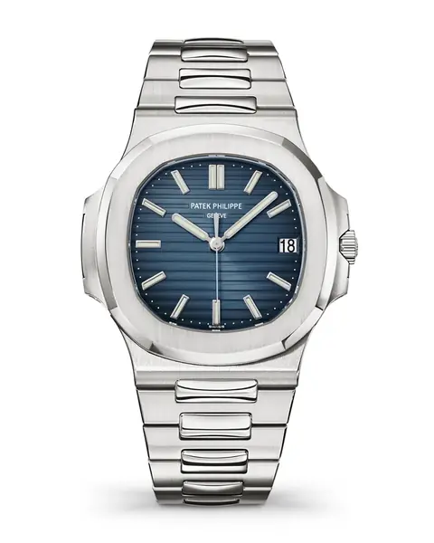
Patek-Philippe-Nautilus-5711-1A-010-1.jpg
Patek Philippe SA. CC BY-SA 4.0. Source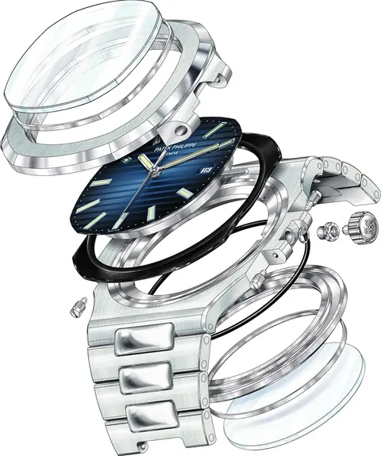
Patek-Philippe-Nautilus-5711.jpg
Patek Philippe SA. CC BY-SA 4.0. Source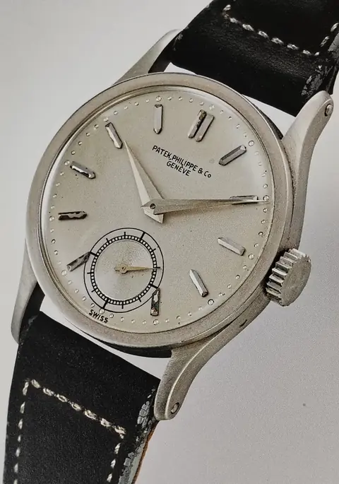
Patek Philippe Calatrava ref. 96, fine anni Trenta.jpg
EMore98. CC BY-SA 4.0. Source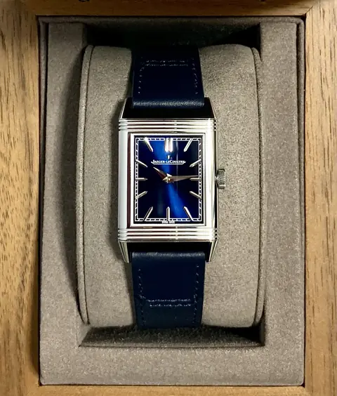
JLC Reverso Tribute Monoface.jpg
Provo rossi. CC BY-SA 4.0. Source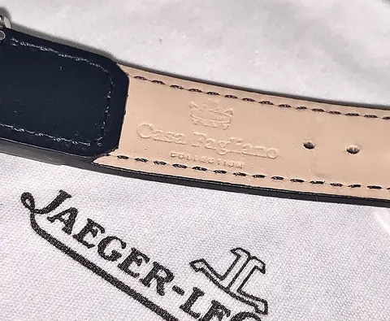
Casa Fagliano Leather Strap (Jaeger-LeCoultre Reverso).jpg
Provo rossi. CC BY-SA 4.0. Source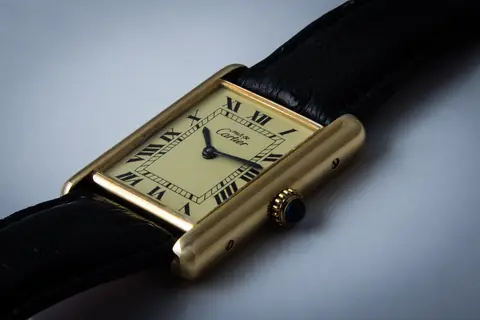
Cartier Tank.jpg
Guy Sie. CC BY-SA 2.0. Source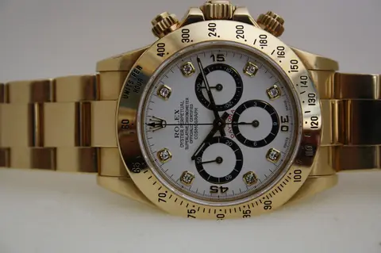
Daytona 16528.jpg
Alesili. CC BY-SA 3.0. Source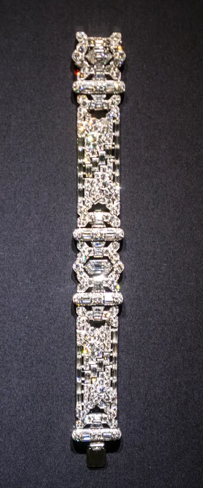
Asymmetrical bracelet - Oscar Heyman and Bros (38866307855).jpg
Tim Evanson from Cleveland Heights, Ohio, USA. CC BY-SA 2.0. Source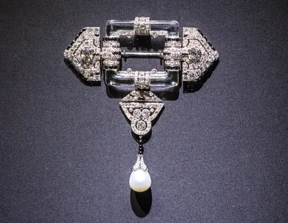
Brooch with pendant - Cartier (39731099992).jpg
Tim Evanson from Cleveland Heights, Ohio, USA. CC BY-SA 2.0. Source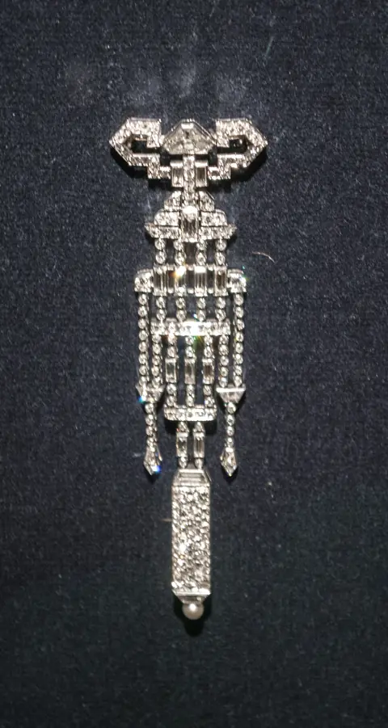
Pendant watch - Van Cleef and Arpels (38772069405).jpg
Tim Evanson from Cleveland Heights, Ohio, USA. CC BY-SA 2.0. Source- Tiffany and Company - Iris Corsage Ornament - Walters 57939.jpg
Tiffany & Co.. Public domain. Source 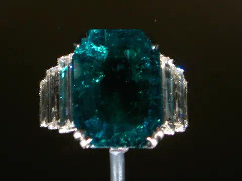
Maximilian Emerald Ring 3527527000 4fb347d000.jpg
thisisbossi. CC BY-SA 2.0. Source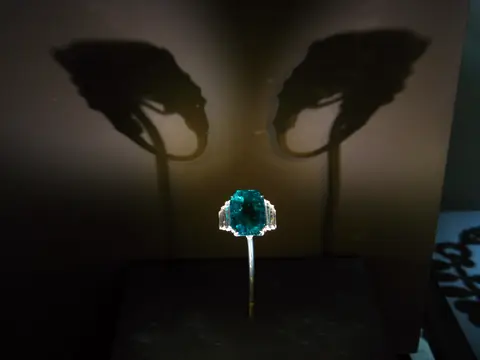
2009 04 19 - 4712 - Washington DC - Natural History Museum - Maximilian Emerald Ring (3526716073).jpg
thisisbossi from Washington, DC, USA. CC BY-SA 2.0. Source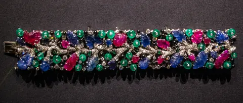
Tutti frutti bracelet - Cartier (25802475508).jpg
Tim Evanson from Cleveland Heights, Ohio, USA. CC BY-SA 2.0. Source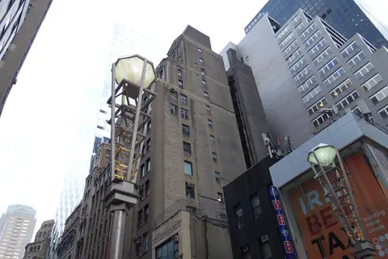
47th St 6th Av td 39 - Diamond District.jpg
Tdorante10. CC BY-SA 4.0. Source- W 47th St 5th Av 01 - Diamond District.jpg
Tdorante10. CC BY-SA 4.0. Source 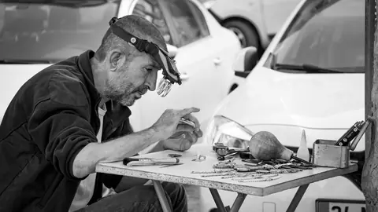
Watchmaker (184539829).jpeg
Yılmaz Kilim. CC0. Source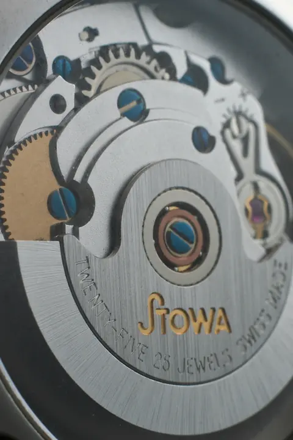
Stowa Antea ETA 2824 macro (3389998183).jpg
Guy Sie from Utrecht, Netherlands. CC BY-SA 2.0. Source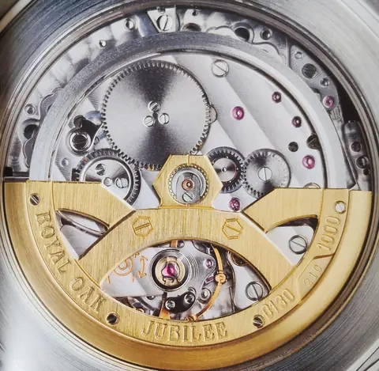
Calibro Audemars Piguet 2121 con rotore personalizzato e numerato per i 20 anni dalla nascita del Royal Oak. Montato sulla ref. 14802 del 1992..jpg
EMore98. CC BY-SA 4.0. Source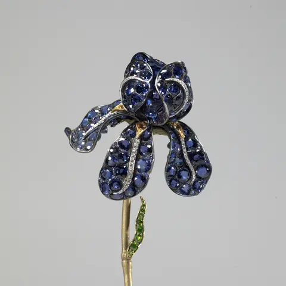
Tiffany and Company - Iris Corsage Ornament - Walters 57939 - Detail.jpg
Tiffany & Co.. Public domain. Source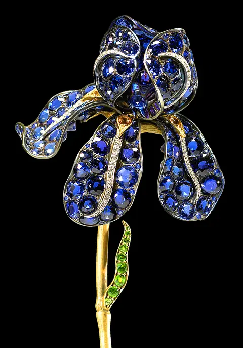
Tiffany and Company Iris Corsage Ornament Walters 57939 Detail croped.jpg
Walters Art Museum. Public domain. Source


.jpg){kind=link}


.jpg){kind=link}


.jpg){kind=link}


.jpg){kind=link}
.jpg){kind=link}
.jpg){kind=link}


.jpg){kind=link}
.jpg){kind=link}


.jpeg){kind=link}
.jpg){kind=link}